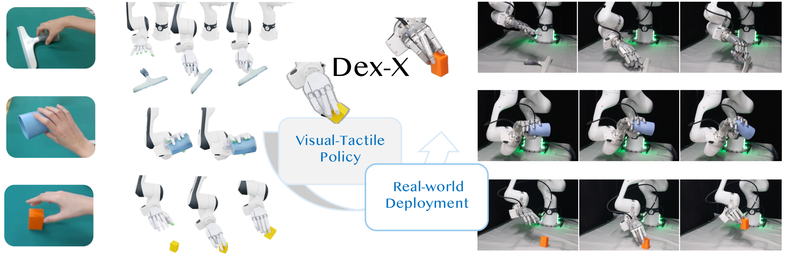
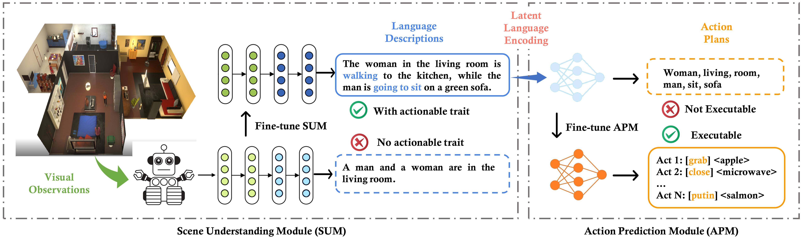
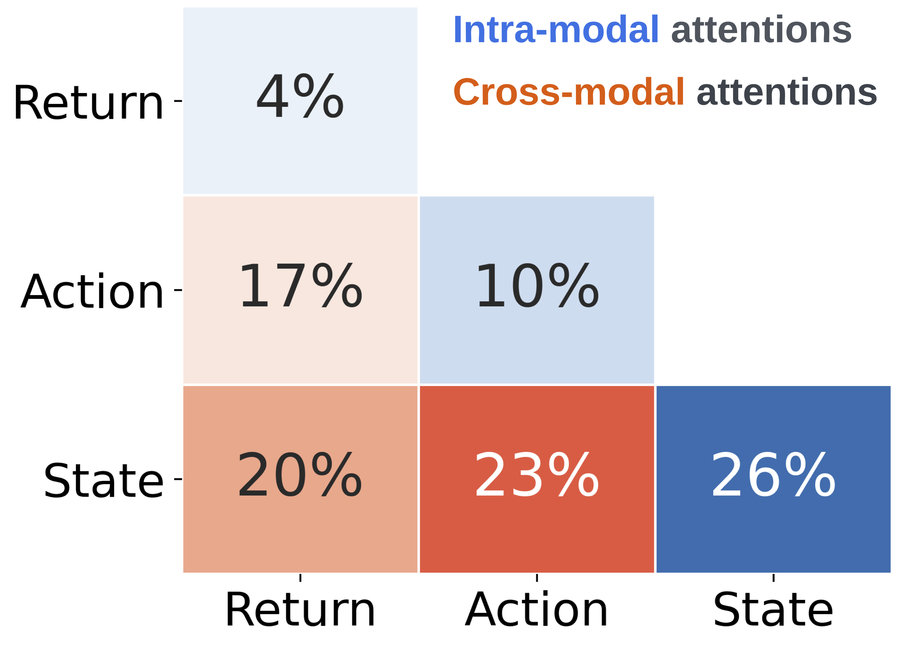
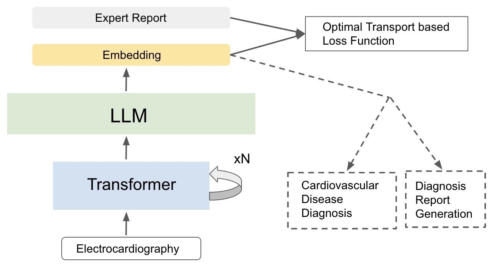
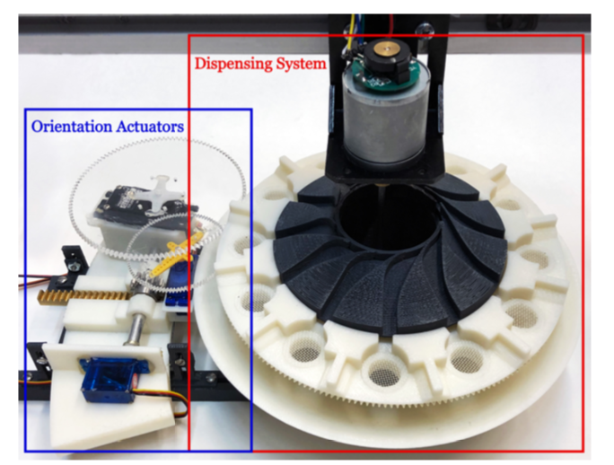
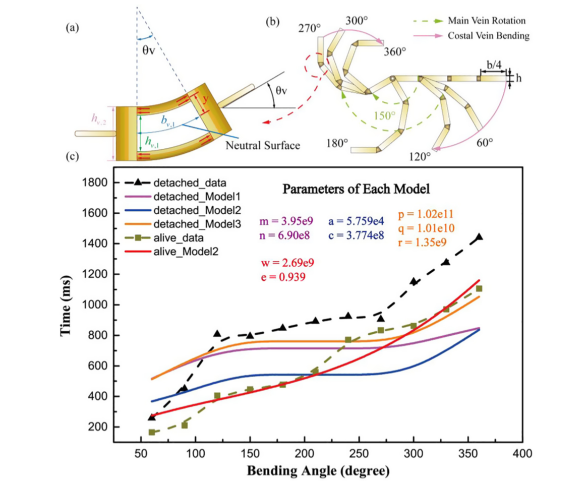

Hi! I am an assistant professor at the Institute for Interdisciplinary Information Sciences (IIIS) at Tsinghua University.
Previously, I was a postdoc at Stanford Vision and Learning Lab (SVL) working with Prof. Jiajun Wu and Prof. Fei-Fei Li. I received my PhD from Carnegie Mellon University with Best PhD Dissertation Award, advised by Prof. Ding Zhao
(SafeAI Lab). My thesis is about building adaptable generalist robots.
I have also spent wonderful summers at Google DeepMind Robotics, MIT-IBM Watson AI Lab, and Toyota Research Institute.
I received a B.E. from Tsinghua University.
I am actively recruiting students to join my lab at Tsinghua IIIS and am also open to research collaborations. If you are interested, please feel free to reach out!
Prospective Students & Collaborations
Thank you for your interest in our lab! We welcome highly motivated undergraduates, graduate students, and visiting scholars to join us and collaborate. We are a highly interdisciplinary lab seeking students from diverse backgrounds, including robot hardware design, large-scale model training, machine learning, control, and robotics.
For undergraduates and graduate students, please complete this form and send me an email.
For potential collaborators, feel free to email me directly with the projects you are interested in.
Research
I am broadly interested in building scalable, adaptable, and reliable robots that seamlessly interact with humans in daily activities. Here are some research highlights:
In-context robot learning with few-shot demonstrations and non-expert data.
Unsupervised learning to discover task/skill structures in dynamics, visual geometries, and agent policies.
Distributionally robust RL that balances performance and robustness when facing task uncertainties.
2026/02 - We released CoVer-VLA, a test-time scaling framework for VLA.
2026/02 - Honored to serve as a Program Committee (PC) member for RSS Pioneers 2026.
2026/01 - MoMaGen and ROSETTA got accepted to ICLR 2026!
2025/10 - MoMaGen released. Check out how MoMaGen generates data for long-horizon bimanual mobile manipulation tasks.
2025/09 - I joined Tsinghua IIIS as a tenure-track Assistant Professor.
2025/06 - ROSETTA won the best paper award at the RSS 2025 Workshop on Continual Robot Learning from Humans (CRLH).
2024/08 - Functional Optimal Transport got accepted to JMLR.
2024/07 - Invited talk at CMU LeCAR Lab.
2024/06 - Joined Stanford Vision and Learning Lab (SVL) as a postdoctoral researcher.
2024/05 - We are organizing the RSS Workshop on Lifelong Robot Learning: Generalization, Adaptation, and Deployment with Large Models and RSS Pioneers 2024 Workshop. See you in Delft!
Publications
( /
/
)

Learning Visual-Tactile Dexterous Manipulation From Human Videos with Simulated Interaction Ruoqu Chen,
Feixiang Ruan,
Liu Cao,
Zihao Wang,
Botian Xu,
Shiqin Tong,
Jiajun Liu,
Wanli Xing,
Kaifeng Zhang,
Mengdi Xu
Preprint. RSS 2026 Workshop on Dexterous Manipulation (spotlight).
[project]
Dynamics as Prompts: In-Context Learning for Sim-to-Real System Identifications
Xilun Zhang*,
Shiqi Liu*,
Peide Huang,
William Han,
Yiqi Lyu,
Mengdi Xu,
Ding Zhao
IEEE Robotics and Automation Letters (RA-L), 2025
Abridged in AAAI 2025 Workshop on Multi-Agent AI in the Real World (oral presentation) [paper][website]
Dynamics as Prompts: In-Context Learning for Sim-to-Real System Identifications
Xilun Zhang*,
Shiqi Liu*,
Peide Huang,
William Han,
Yiqi Lyu,
Mengdi Xu,
Ding Zhao
IEEE Robotics and Automation Letters (RA-L), 2025
Abridged in AAAI 2025 Workshop on Multi-Agent AI in the Real World (oral presentation) [paper][website]
2024

Embodied Executable Policy Learning with Language-based Scene Summarization
Jielin Qiu*,
Mengdi Xu*,
William Han*,
Seungwhan Moon,
Ding Zhao
2024 Annual Conference of the North American Chapter of the Association for Computational Linguistics (NAACL)
Abridged in ICML 2023 Workshop on Interactive Learning with Implicit Human Feedback (spotlight) [paper]
Group Distributionally Robust Reinforcement Learning with Hierarchical Latent Variables
Mengdi Xu,
Peide Huang,
Yaru Niu,
Visak Kumar,
Jielin Qiu,
Chao Fang,
Kuan-Hui Lee,
Xuewei Qi,
Henry Lam,
Bo Li,
Ding Zhao
The 26th International Conference on Artificial Intelligence and Statistics, (AISTATS), 2023
Abridged in ICML 2022 workshop on Principles of Distribution Shift.
Abridged in ICRA 2022 the Fresh Perspectives on the Future of Autonomous Driving Workshop
[paper][webpage]

A trajectory is worth three sentences: multimodal transformer for offline reinforcement learning
Yiqi Wang,
Mengdi Xu,
Laixi Shi,
Yuejie Chi
Proceedings of the Thirty-Ninth Conference on Uncertainty in Artificial Intelligence, (UAI), 2023
[paper][code]

Transfer Knowledge from Natural Language to Electrocardiography: Can We Detect Cardiovascular Disease Through Language Models?
Jielin Qiu,
William Han,
Jiacheng Zhu,
Mengdi Xu,
Michael Rosenberg,
Emerson Liu,
Douglas Weber,
Ding Zhao
The 17th Conference of the European Chapter of the Association for Computational Linguistics (EACL), 2023
[paper]
2022
Curriculum Reinforcement Learning using Optimal Transport via Gradual Domain Adaptation
Peide Huang,
Mengdi Xu,
Jiacheng Zhu,
Laixi Shi,
Fei Fang,
Ding Zhao,
The 36th Conference on Neural Information Processing Systems, (NeurIPS), 2022
[paper]
Robust Reinforcement Learning as a Stackelberg Game via Adaptively-Regularized Adversarial Training
Peide Huang,
Mengdi Xu,
Fei Fang,
Ding Zhao
International Joint Conference on Artificial Intelligence (IJCAI), 2022
[paper][bibtex]
CMTS: Conditional Multiple Trajectory Synthesizer for Generating Safety-critical Driving Scenarios
Wenhao Ding,
Mengdi Xu,
Ding Zhao
International Conference on Robotics and Automation (ICRA), 2020 [paper][code][bibtex]
2019

Mosquito staging apparatus for producing PfSPZ malaria vaccines Mengdi Xu,
Shengnan Lyu,
Yingtian Xu,
Can Kocabalkanli,
Brian K. Chirikjian,
John S. Chirikjian,
Joshua Davis,
Jin Seob Kim,
Iulian Iordachita,
Russell H. Taylor,
Gregory S. Chirikjian
IEEE 15th International Conference on Automation Science and Engineering (CASE), 2019 [paper][bibtex]
Recovering a Rotation Matrix From Three Direction Cosines Mengdi Xu,
Gregory S. Chirikjian
ASME 2018 International Design Engineering Technical Conferences and Computers and Information in Engineering Conference (IDETC-CIE), 2018 [paper][bibtex]

Influence of hydrodynamic pressure and vein strength on the super-elasticity of honeybee wings
Jieliang Zhao*,
Mengdi Xu*
Youjian Liang,
Shaoze Yan,
Wendong Niu
Journal of insect physiology, 2018 [paper][bibtex]
Talks
Research Overview March 2024
Awards
Best PhD Dissertation Award 2024, Mechanical Engineering, CMU, 2024
EECS Rising Stars, 2023
Robotics: Science and Systems (RSS) Pioneers, 2023
Rising Stars in Computational and Data Sciences, 2023
Service
Area Chair for ACL ARR
Co-organized The first BEHAVIOR Challenge 2025
Co-organized RSS 2024 Workshop on Lifelong Robot Learning: Generalization, Adaptation, and Deployment with Large Models
Co-organized RSS Pioneers Workshop 2024
Breakout session leader at 3rd Women in Machine Learning Un-Workshop, ICML 2022
Mentor of 2020 CMU Robotics Institute Summer Scholars Program (RISS)